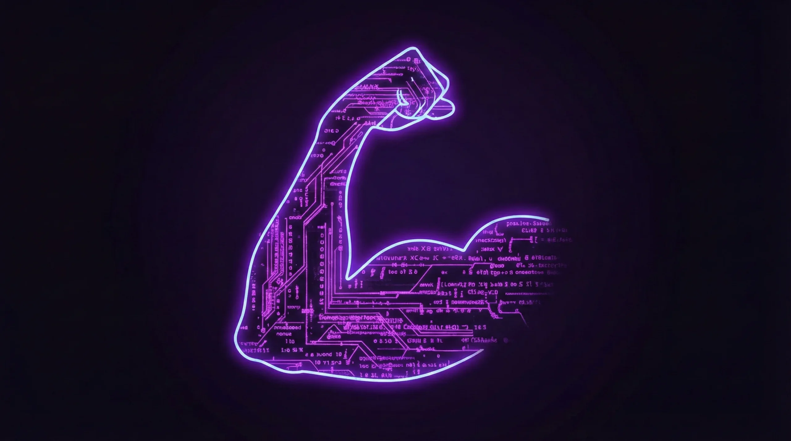

|
Topic: Implicit Bias, Intersectionality, and the IAT
Target Audience: First-Year College Students | Subject: Socio-Technical Ethics
Implicit bias refers to the attitudes or stereotypes that affect our understanding, actions, and decisions in an unconscious manner. These biases are activated involuntarily and without an individual’s awareness or intentional control.
Key Resource:
Kirwan Institute's State of the Science A comprehensive review of how implicit bias affects various sectors of society.  The Implicit Association Test (IAT) measures the strength of associations between concepts and stereotypes. It relies on response speed to determine automatic mental patterns.
Try it yourself:
Project Implicit (Harvard) The primary platform for taking the IAT across a variety of categories. ⚡
Testing Speed of Association Intersectionality is a framework for understanding how various social and political identities overlap to create unique modes of discrimination and privilege. Essential Video: The Urgency of Intersectionality by Professor Kimberlé Crenshaw.
Deep Dive: Original TED Link
Professor Crenshaw explains the concept using the analogy of a traffic intersection, showing how being at the crossroads of multiple identities creates specific vulnerabilities. For first-year students, it is easy to think that data and algorithms are "fair" because they are mathematical. However, implicit bias in the developers and intersectionality in the data sets can lead to systems that reinforce inequality. Awareness is the first step toward better design. |